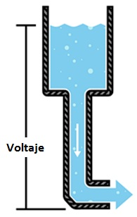
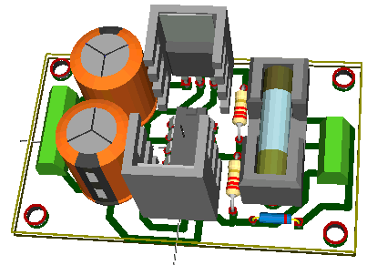

Definición de voltaje y Corriente
¿QUÉ ES EL VOLTAJE ?
𝙳𝚎𝚏𝚒𝚗𝚒𝚖𝚘𝚜 𝚎𝚕 𝚟𝚘𝚕𝚝𝚊𝚓𝚎 𝚌𝚘𝚖𝚘 𝚕𝚊 𝚌𝚊𝚗𝚝𝚒𝚍𝚊𝚍 𝚍𝚎 𝚎𝚗𝚎𝚛𝚐í𝚊 𝚙𝚘𝚝𝚎𝚗𝚌𝚒𝚊𝚕 𝚎𝚗𝚝𝚛𝚎 𝚍𝚘𝚜 𝚙𝚞𝚗𝚝𝚘𝚜 𝚎𝚗 𝚞𝚗 𝚌𝚒𝚛𝚌𝚞𝚒𝚝𝚘. 𝚄𝚗 𝚙𝚞𝚗𝚝𝚘 𝚝𝚒𝚎𝚗𝚎 𝚖á𝚜 𝚌𝚊𝚛𝚐𝚊 𝚚𝚞𝚎 𝚘𝚝𝚛𝚘. 𝙻𝚊 𝚍𝚒𝚏𝚎𝚛𝚎𝚗𝚌𝚒𝚊 𝚍𝚎 𝚌𝚊𝚛𝚐𝚊 𝚎𝚗𝚝𝚛𝚎 𝚕𝚘𝚜 𝚍𝚘𝚜 𝚙𝚞𝚗𝚝𝚘𝚜 𝚜𝚎 𝚕𝚕𝚊𝚖𝚊 𝚟𝚘𝚕𝚝𝚊𝚓𝚎. 𝚂𝚎 𝚖𝚒𝚍𝚎 𝚎𝚗 𝚟𝚘𝚕𝚝𝚜, 𝚚𝚞𝚎 𝚝é𝚌𝚗𝚒𝚌𝚊𝚖𝚎𝚗𝚝𝚎 𝚎𝚜 𝚕𝚊 𝚎𝚗𝚎𝚛𝚐í𝚊 𝚙𝚘𝚝𝚎𝚗𝚌𝚒𝚊𝚕 𝚎𝚗𝚝𝚛𝚎 𝚍𝚘𝚜 𝚙𝚞𝚗𝚝𝚘 𝚚𝚞𝚎 𝚟𝚊𝚗 𝚊 𝚒𝚖𝚙𝚊𝚛𝚝𝚒𝚛 𝚞𝚗 𝚓𝚘𝚞𝚕𝚎 𝚍𝚎 𝚎𝚗𝚎𝚛𝚐í𝚊 𝚙𝚘𝚛 𝚌𝚘𝚞𝚕𝚘𝚖𝚋 𝚍𝚎 𝚌𝚊𝚛𝚐𝚊 𝚚𝚞𝚎 𝚙𝚊𝚜𝚊 𝚊 𝚝𝚛𝚊𝚟é𝚜 𝚍𝚎 é𝚕 .
- ᴀɢᴜᴀ = ᴄᴀʀɢᴀ
- ᴘʀᴇꜱɪoɴ = ᴠᴏʟᴛᴀᴊᴇ
- ꜰʟᴜᴊᴏ = ᴄᴏʀʀɪᴇɴᴛᴇ
𝙲𝚞𝚊𝚗𝚍𝚘 𝚜𝚎 𝚍𝚎𝚜𝚌𝚛𝚒𝚋𝚎 𝚎𝚕 𝚟𝚘𝚕𝚝𝚊𝚓𝚎, 𝚕𝚊 𝚌𝚘𝚛𝚛𝚒𝚎𝚗𝚝𝚎, 𝚢 𝚕𝚊 𝚛𝚎𝚜𝚒𝚜𝚝𝚎𝚗𝚌𝚒𝚊, 𝚞𝚗𝚊 𝚊𝚗𝚊𝚕𝚘𝚐í𝚊 𝚌𝚘𝚖ú𝚗 𝚎𝚜 𝚞𝚗 𝚎𝚜𝚝𝚊𝚗𝚚𝚞𝚎 𝚍𝚎 𝚊𝚐𝚞𝚊. 𝙴𝚗 𝚎𝚜𝚝𝚊 𝚊𝚗𝚊𝚕𝚘𝚐í𝚊 𝚕𝚊 𝚌𝚊𝚛𝚐𝚊 𝚜𝚎 𝚛𝚎𝚙𝚛𝚎𝚜𝚎𝚗𝚝𝚊 𝚙𝚘𝚛 𝚕𝚊 𝚌𝚊𝚗𝚝𝚒𝚍𝚊𝚍 𝚍𝚎 𝚊𝚐𝚞𝚊, 𝚎𝚕 𝚟𝚘𝚕𝚝𝚊𝚓𝚎 𝚜𝚎 𝚛𝚎𝚙𝚛𝚎𝚜𝚎𝚗𝚝𝚊 𝚙𝚘𝚛 𝚕𝚊 𝚙𝚛𝚎𝚜𝚒ó𝚗 𝚍𝚎𝚕 𝚊𝚐𝚞𝚊, 𝚢 𝚕𝚊 𝚌𝚘𝚛𝚛𝚒𝚎𝚗𝚝𝚎 𝚜𝚎 𝚛𝚎𝚙𝚛𝚎𝚜𝚎𝚗𝚝𝚊 𝚙𝚘𝚛 𝚎𝚕 𝚏𝚕𝚞𝚓𝚘 𝚍𝚎 𝚊𝚐𝚞𝚊. 𝙴𝚗𝚝𝚘𝚗𝚌𝚎𝚜 𝚙𝚊𝚛𝚊 𝚎𝚜𝚝𝚊 𝚊𝚗𝚊𝚕𝚘𝚐í𝚊 𝚛𝚎𝚌𝚞𝚎𝚛𝚍𝚎:


¿QUÉ ES LA CORRIENTE ELECTRICA ?
𝙿𝚘𝚍𝚎𝚖𝚘𝚜 𝚙𝚎𝚗𝚜𝚊𝚛 𝚎𝚗 𝚕𝚊 𝚌𝚊𝚗𝚝𝚒𝚍𝚊𝚍 𝚍𝚎 𝚊𝚐𝚞𝚊 𝚚𝚞𝚎 𝚏𝚕𝚞𝚢𝚎 𝚊 𝚝𝚛𝚊𝚟é𝚜 𝚍𝚎 𝚕𝚊 𝚖𝚊𝚗𝚐𝚞𝚎𝚛𝚊 𝚍𝚎𝚜𝚍𝚎 𝚎𝚕 𝚝𝚊𝚗𝚚𝚞𝚎 𝚌𝚘𝚖𝚘 𝚕𝚊 𝚌𝚘𝚛𝚛𝚒𝚎𝚗𝚝𝚎. 𝙼𝚒𝚎𝚗𝚝𝚛𝚊𝚜 𝚖á𝚜 𝚊𝚕𝚝𝚊 𝚕𝚊 𝚙𝚛𝚎𝚜𝚒ó𝚗, 𝚖𝚊𝚜 𝚊𝚕𝚝𝚘 𝚎𝚕 𝚏𝚕𝚞𝚓𝚘, 𝚢 𝚟𝚒𝚌𝚎𝚟𝚎𝚛𝚜𝚊. 𝙲𝚘𝚗 𝚎𝚕 𝚊𝚐𝚞𝚊, 𝚖𝚎𝚍𝚒𝚛í𝚊𝚖𝚘𝚜 𝚎𝚕 𝚟𝚘𝚕𝚞𝚖𝚎𝚗 𝚍𝚎 𝚊𝚐𝚞𝚊 𝚚𝚞𝚎 𝚏𝚕𝚞𝚢𝚎 𝚊 𝚝𝚛𝚊𝚟é𝚜 𝚍𝚎 𝚕𝚊 𝚖𝚊𝚗𝚐𝚞𝚎𝚛𝚊 𝚜𝚘𝚋𝚛𝚎 𝚞𝚗 𝚌𝚒𝚎𝚛𝚝𝚘 𝚙𝚎𝚛𝚒𝚘𝚍𝚘 𝚍𝚎 𝚝𝚒𝚎𝚖𝚙𝚘. 𝙲𝚘𝚗 𝚕𝚊 𝚎𝚕𝚎𝚌𝚝𝚛𝚒𝚌𝚒𝚍𝚊𝚍, 𝚖𝚎𝚍𝚒𝚖𝚘𝚜 𝚕𝚊 𝚌𝚊𝚗𝚝𝚒𝚍𝚊𝚍 𝚍𝚎 𝚌𝚊𝚛𝚐𝚊 𝚚𝚞𝚎 𝚏𝚕𝚞𝚢𝚎 𝚊 𝚝𝚛𝚊𝚟é𝚜 𝚍𝚎𝚕 𝚌𝚒𝚛𝚌𝚞𝚒𝚝𝚘 𝚜𝚘𝚋𝚛𝚎 𝚞𝚗 𝚙𝚎𝚛𝚒𝚘𝚍𝚘 𝚍𝚎 𝚝𝚒𝚎𝚖𝚙𝚘. 𝙻𝚊 𝚌𝚘𝚛𝚛𝚒𝚎𝚗𝚝𝚎 𝚜𝚎 𝚖𝚒𝚍𝚎 𝚎𝚗 𝙰𝚖𝚙𝚎𝚛𝚎𝚜. 𝚄𝚗 𝚊𝚖𝚙𝚎𝚛𝚎 𝚜𝚎 𝚍𝚎𝚏𝚒𝚗𝚎 𝚌𝚘𝚖𝚘 𝟼.𝟸𝟺𝟷*𝟷𝟶𝟷𝟾𝚎𝚕𝚎𝚌𝚝𝚛𝚘𝚗𝚎𝚜 (𝟷 𝙲𝚘𝚞𝚕𝚘𝚖𝚋) 𝚙𝚘𝚛 𝚜𝚎𝚐𝚞𝚗𝚍𝚘 𝚚𝚞𝚎 𝚙𝚊𝚜𝚊𝚗 𝚊 𝚝𝚛𝚊𝚟é𝚜 𝚍𝚎 𝚞𝚗 𝚙𝚞𝚗𝚝𝚘 𝚎𝚗 𝚞𝚗 𝚌𝚒𝚛𝚌𝚞𝚒𝚝𝚘. 𝙻𝚊 𝚌𝚘𝚛𝚛𝚒𝚎𝚗𝚝𝚎 𝚎𝚕é𝚌𝚝𝚛𝚒𝚌𝚊 (𝙸) 𝚎𝚜 𝚖𝚎𝚍𝚒𝚍𝚊 𝚎𝚗 𝚊𝚖𝚙𝚎𝚛𝚎𝚜.

La energía ni se crea no si se destruye, se trasforma.